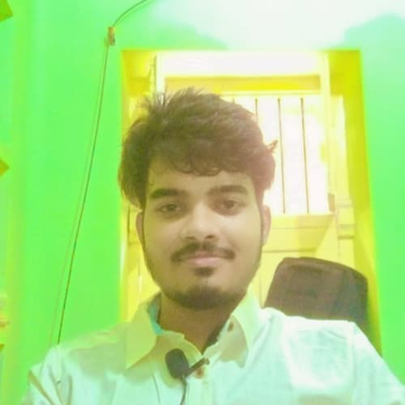

Shantanu Sahay
🚀 Welcome to my website!
I like making stuff and putting it on the internet
📜 About
Hello guys this is shantanu sahay from this side, I am a pre-final year student at LNCTS Bhopal . I am a Front-End Web Developer , A passionate Game Developer, And a Person who is Highly Dedicated and Serious of his Work. I am currently working on My Web developement skills . This portfolio Website Has Been Created By me. I belong to state bihar and My hometown is in Patna.
Skills
C++ Python. MERN Stack Web Developement. Game Developement. AI, DeepLearning. LeaderShip, Professional Speaker(fluent) .
👩🏽🚀 Educational Qualification
I have passed my High school Examination from patna with an agreggate of 9.00 cgpa (10th ). I have secured around 72 % in My intermediate from Kendriya Vidyalaya Kankarbagh. Currently I have secured 9.1 cgpa from LNCTS Bhopal.
🏆 Accomplishments
I am currently Working as a Lead Game developer in Google Students Developer Club. where I have responsibility and Experience of Teaching the fellow students.

I am a Microsoft Azure Certified in AI, AI-900.
The best way out is always through
-Robert Frost
🌮 Projects
AI Expression Recognizer
Created an Artificial Intelligence based Expression Recognizer, Helping to detect the expression using Webcam,by the use of Neural Networks.
Penuomonia Detector Using AI
Created an A.I based Penmonia Detector which using A.N.N and C.N.N for detection of the disease in early phase.
Online Student Management System using A.I
Developed and AI based online student Management system which recognises faces using Neural Networks and , Records attendance and time of entrance. using python as language.
Zombie Runner
An fps game made using c# as programming language And unity as game engine, uses AI navigation path .
E-Commerce Website using MERN stack
Created a Fully Developed Mern Stack E-commerce Website.Thanks for watching!
2021 Shantanu sahay . All rights Reserved.